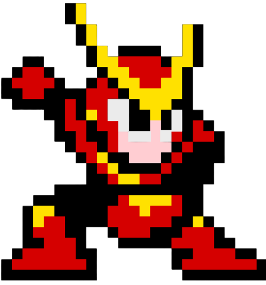
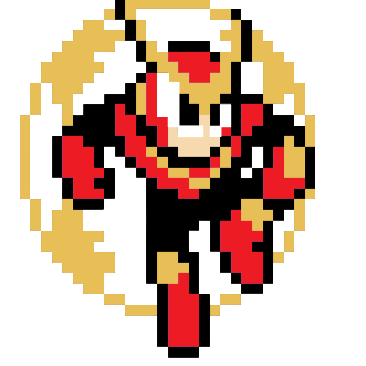

To defeat Quick Man in Mega Man 2, follow these strategies!
Use the Boom:
Quick Man's weapon, the Quick Boomerang, can be used to deal damage to Metal Man.
Quick Boomerang:
After defeating Quick Man, you will recieve his weapon, the Quick Boomerang, which can be used in future battles.
Attack:
His attack pattern involves running and jumping speedily cross the room while launching a trio of homing quick boomerangs.
At Start:
Start the stage with Item-3 to grab an extra life and avoid Scworms.
Avoid Laser Beams:
Fall down the left chute to avoid the laser beams and pick up the extra life and E-Tank.
Time Stopper:
Use the Time Stopper weapon to freeze Quick Man, but save it for the end of the stage to avoid running out of energy.